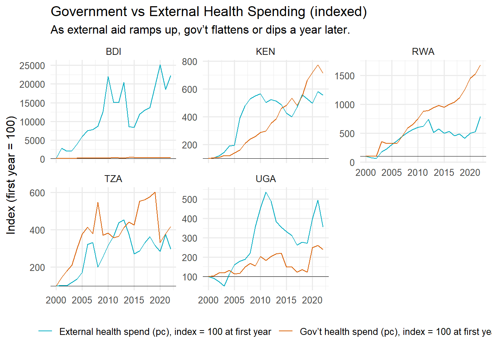

# --- Packages ---
library(readxl)Warning: package 'readxl' was built under R version 4.4.3library(tidyverse)── Attaching core tidyverse packages ──────────────────────── tidyverse 2.0.0 ──
✔ dplyr 1.1.4 ✔ readr 2.1.5
✔ forcats 1.0.0 ✔ stringr 1.5.1
✔ ggplot2 3.5.1 ✔ tibble 3.2.1
✔ lubridate 1.9.3 ✔ tidyr 1.3.1
✔ purrr 1.0.2
── Conflicts ────────────────────────────────────────── tidyverse_conflicts() ──
✖ dplyr::filter() masks stats::filter()
✖ dplyr::lag() masks stats::lag()
ℹ Use the conflicted package (<http://conflicted.r-lib.org/>) to force all conflicts to become errorslibrary(fixest)Warning: package 'fixest' was built under R version 4.4.3library(broom)
library(purrr)
library(scales)
Attaching package: 'scales'
The following object is masked from 'package:fixest':
pvalue
The following object is masked from 'package:purrr':
discard
The following object is masked from 'package:readr':
col_factorlibrary(countrycode)Warning: package 'countrycode' was built under R version 4.4.3# --- 0) Settings ---
path_xlsx <- "./input/GHED_data.XLSX"
eac_core6 <- c("BDI","KEN","RWA","TZA","UGA","SSD")
use_set <- eac_core6
year_min <- 2012
year_max <- 2022
# --- 1) Load just the columns we need ---
ghed <- read_excel(
path_xlsx, sheet = "Data",
col_types = "text"
)
ghed_small <- ghed %>%
transmute(
code = .data$code,
location = .data$location,
year = suppressWarnings(as.integer(.data$year)),
gghed_pc = suppressWarnings(as.numeric(.data$gghed_pc_usd)),
ext_pc = suppressWarnings(as.numeric(.data$ext_pc_usd))
) %>%
filter(!is.na(code), !is.na(year)) %>%
filter(code %in% use_set, year >= year_min, year <= year_max)
min_years <- 10
keep_codes <- ghed_small %>%
group_by(code) %>% summarise(ny = n_distinct(year), .groups="drop") %>%
filter(ny >= min_years) %>% pull(code)
panel <- ghed_small %>%
filter(code %in% keep_codes) %>%
arrange(code, year) %>%
group_by(code) %>%
mutate(
d_gov_pc = gghed_pc - lag(gghed_pc),
ext_pc_lag = lag(ext_pc)
) %>%
ungroup()
usable <- panel %>% filter(!is.na(d_gov_pc), !is.na(ext_pc_lag))
# --- 3) Panel fixed-effects regression ---
est <- feols(
d_gov_pc ~ ext_pc_lag | code + year,
data = usable,
vcov = ~code
)
coef_tbl <- broom::tidy(est, conf.int = TRUE)
# Display regression table
coef_tbl# A tibble: 1 × 7
term estimate std.error statistic p.value conf.low conf.high
<chr> <dbl> <dbl> <dbl> <dbl> <dbl> <dbl>
1 ext_pc_lag -0.00926 0.107 -0.0865 0.935 -0.306 0.288# --- 4) Visualization A ---
p_scatter <- usable %>%
ggplot(aes(x = ext_pc_lag, y = d_gov_pc)) +
geom_hline(yintercept = 0, linewidth = 0.3) +
geom_point(alpha = 0.6, size = 2) +
geom_smooth(method = "lm", se = TRUE, formula = y ~ x, linewidth = 0.6) +
labs(
title = "Displacement test (EAC): ΔGov’t health spend per capita vs lagged external spend",
subtitle = paste0("Country & year FE; clustered SEs by country (N rows = ", nrow(usable), ")"),
x = "External health expenditure per capita (US$), lagged 1 year",
y = "Change in gov’t health spend per capita (US$)"
) +
scale_x_continuous(labels = label_dollar(accuracy = 1)) +
scale_y_continuous(labels = label_dollar(accuracy = 1)) +
theme_minimal(base_size = 12)
p_scatter
# --- 5) Visualization B ---
by_ctry <- usable %>% group_split(code)
fit_ctry <- map_dfr(by_ctry, function(d) {
m <- lm(d_gov_pc ~ ext_pc_lag, data = d)
broom::tidy(m, conf.int = TRUE) %>%
filter(term == "ext_pc_lag") %>%
mutate(code = d$code[1])
})
fit_ctry <- fit_ctry %>% arrange(estimate) %>% mutate(code = factor(code, code))
p_coef <- ggplot(fit_ctry, aes(estimate, code)) +
geom_vline(xintercept = 0, linewidth = 0.3) +
geom_point() +
geom_errorbarh(aes(xmin = conf.low, xmax = conf.high), height = 0.15) +
labs(
title = "Country-specific displacement slopes",
x = "Coefficient (US$ change in gov’t pc per +US$1 external pc, lagged)",
y = NULL
) +
theme_minimal(base_size = 12)
p_coef# --- 6) Visualization C ---
index_it <- function(x) { x / first(na.omit(x)) * 100 }
index_df <- ghed_small %>%
filter(code %in% keep_codes) %>%
group_by(code) %>%
arrange(year, .by_group = TRUE) %>%
mutate(
gghed_idx = index_it(gghed_pc),
ext_idx = index_it(ext_pc)
) %>%
ungroup() %>%
pivot_longer(c(gghed_idx, ext_idx), names_to = "series", values_to = "index")
series_labels <- c(gghed_idx = "Gov’t health spend (pc), index = 100 at first year",
ext_idx = "External health spend (pc), index = 100 at first year")
p_facets <- ggplot(index_df, aes(year, index, color = series)) +
geom_hline(yintercept = 100, linewidth = 0.2) +
geom_line() +
facet_wrap(~ code, scales = "free_y") +
labs(
title = "Government vs External Health Spending (indexed)",
subtitle = "As external aid ramps up, gov’t flattens or dips a year later.",
x = NULL, y = "Index (first year = 100)", color = NULL
) +
scale_color_manual(values = c("#00ACC1", "#d95f02"), labels = series_labels) +
theme_minimal(base_size = 12) +
theme(legend.position = "bottom")
p_facets